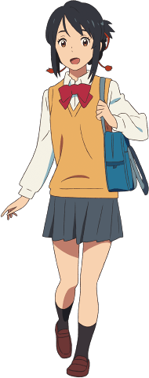

Mitsuha Miyamizu (宮水 三葉 Miyamizu Mitsuha) is a 17-year-old teenager who lives in a small rural town called Itomori.
She is part of her family's shrine and participates in old traditions by being a shrine maiden with her younger sister.
Dislike of his hometown, problems with his family's sanctuary, and problems with his father make Mitsuha want to live
as a handsome boy in Tokyo. Her wish would eventually be partially granted, as she would begin to switch bodies
with Taki Tachibana.

| Appearance | Mitsuha is a teenage girl of an average build and height who is described as very beautiful and the spitting image of her late mother, Futaba. She has straight, upper-back length black hair which she wears in a unique hair-do; two braids on each side tied into a small ponytail with a red, blue and yellow-orange-colored braided cord and brown eyes. |
|---|---|
| Personality | Mitsuha is a kind, caring, organized and supportive girl who is also determined and sometimes persistent, frank, as well as adventurous. She is tired of her close-knit lifestyle in the small and rural town of Itomori, and as so she is also flaky and uninterested in her family's traditions and wishes to explore outside of her hometown. |
| Trivia | Her name, Mitsuha (三葉) means "three leaves". This also applies with her grandmother, her name meaning "one leaf"; her mother, "two leaves"; and her younger sister, "four leaves". |